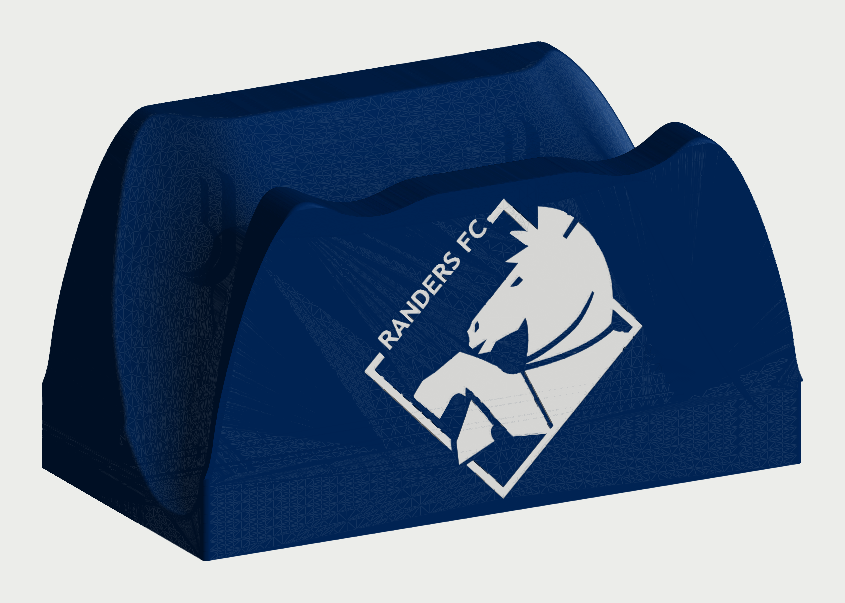
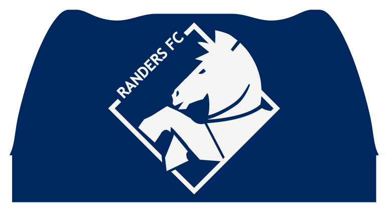

Forsiden set lige forfra
Logo 2 farver
Klublogoet med hesten i ruderammen og RANDERS FC i buen, så stort som forsiden tillader. Ellers er der ikke noget. Det er det enkleste af forslagene, og her står logoet skarpest.
- Udtryk
- Rent og officielt
- Mest
- Mørkeblå, med et hvidt logo
- Logoet er 55 mm højt